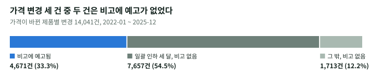
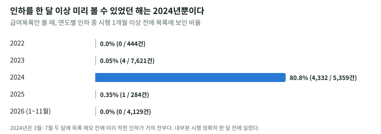
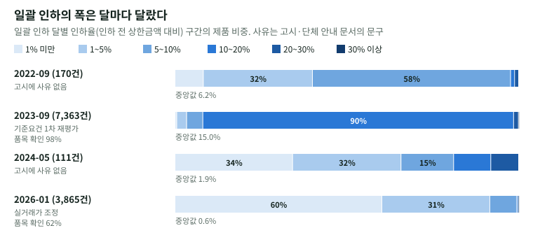

약값 인하 예고, 얼마나 믿을 수 있나
급여목록 스냅샷으로 본 예고의 실현율, 인하를 미리 알 수 있는 정도, 그리고 인하의 폭
묻는 것
급여목록 비고의 예고는 얼마나 실현되나. 목록만 보는 사람은 약값 인하를 시행 몇 달 전에 알 수 있나. 그 인하는 얼마나 작은가.
쓴 자료
심평원 급여목록 2022-01~2025-12(주 결과), 2026-01~11(확장 구간, 따로 표시). 일괄 인하의 사유는 보건복지부 고시와 대한병원협회·대한약사회 안내 문서에서 확인했다. 모두 공개 자료다.
주의
예고는 아직 일어난 변화가 아니다. 급여정지 예정과 일부 인하 예고는 법원 집행정지로 막힐 수 있다.
한 쪽 요약
결론 네 가지
- 비고에 적힌 약값 인하 예고는 거의 다 실현됐다. 결과가 난 제품 4,659개 중 99.96%다.
- 하지만 목록만 보고 인하를 한 달 이상 미리 안 것은 2024년뿐이다. 2022~2025 인하 13,708건 중 31.6%가 시행 1개월 이상 전에 목록에 보였는데, 그 거의 전부가 2024년의 두 달이다. 다른 해는 0~0.35%다. 미리 보인 인하도 대부분 정확히 한 달 전이었다.
- 정부의 일괄 인하는 목록에서는 시행되는 달에 처음 보인다. 고시와 단체 안내로는 4~13일 먼저 알 수 있었다.
- 일괄 인하의 폭은 그때그때 달랐다. 2023-09 기준요건 재평가 인하는 대부분 10~20%였고, 2026-01 실거래가 조정 인하는 60%가 1% 미만이었다. 2026-01 인하의 19.6%는 정확히 1원이었다.
| 할 것 | 하지 말 것 |
|---|---|
| 비고의 인하 예고를 알림에 쓴다 | 비고만 보고 “이번 달 가격 변동 없음”이라고 판단한다 |
| 매달 목록을 전달과 비교하고, 고시·단체 안내를 함께 본다 | “목록에 미리 나온다”고 기대한다. 대부분의 인하는 시행되는 달에 처음 보인다 |
| 인하 폭을 원 단위와 비율로 함께 본다 | 한 해의 비율 하나로 “늘 이렇다”고 말한다 |
자료 소개
| 항목 | 내용 |
|---|---|
| 내는 곳 | 건강보험심사평가원(심평원) |
| 무엇이 들었나 | 건강보험이 적용되는 약과 상한가격, 메모 칸(비고), 약효분류 번호 |
| 단위 | 제품 |
| 쓴 기간 | 주 결과 2022-01 ~ 2025-12 (48개월), 확장 구간 2026-01 ~ 11 |
| 공개 시차 | 매달 1일 기준 파일 |
| 주의할 점 | 한 장만 봐서는 언제 바뀌었는지 알 수 없음 |
급여목록은 매달의 스냅샷이다. 그래서 파일을 이어 붙여 제품별 변화 기록표(언제 무엇이 바뀌었는지)를 만들었다. 비고에 적힌 “’25.7.1. 인하” 같은 미래 날짜는 아직 일어난 변화가 아니라 예고로 따로 적고, 뒤 파일로 실현 여부를 확인했다.
일괄 인하의 사유는 목록에 없다. 그래서 보건복지부 「약제 급여 목록 및 급여 상한금액표」 개정 고시 네 건과 그 변경대비표, 대한병원협회 공문, 대한약사회 안내 자료를 제품 단위로 맞춰 봤다(부록 C).
이 자료에 없는 것: 제품별 판매량, 약국별 구매·재고, 도매 유통, 급여 삭제 예정일. 이것들에 대한 결론은 이 글에 없다.
예고는 얼마나 실현되나
약값 인하와 신규 등재 예고는 거의 그대로 실현됐다. 급여정지·중지 예정은 법원에서 막히는 경우가 있어 날짜가 자주 밀렸다. 비고의 예고는 이미 발표된 고시를 옮겨 적은 것이라 실현율이 높은 것이 자연스럽다.
| 예고 종류 | 제품 수 | 결과가 난 것 중 실현 | 예정일에 그대로 | 얼마나 먼저 보이나 (중앙값) |
|---|---|---|---|---|
| 약값 인하 (비고) | 4,683 | 99.96% | 98.5% | 30일 |
| 신규 등재 | 342 | 100.0% | 100.0% | 8일 |
| 급여정지·중지 예정 | 203 | 100.0% | 35.8% | 23일 |
- 실현에는 조금 늦게, 다른 금액으로, 또는 급여정지 대신 삭제로 실현된 것도 들어 있다. ’결과가 난 것’은 아직 법원 집행정지로 결과가 안 난 것과 집행정지 뒤 목록에서 빠진 것을 뺀 것이다. 목록에서 빠지면 예고가 실현됐는지 판단할 대상이 사라진다. 아래 집행정지 결말 표와 같은 규칙이다.
- 1판과 숫자가 다른 이유: 1판은 집행정지 뒤 목록에서 빠진 제품(인하 예고 10개, 급여정지·중지 예정 13개)을 미실현으로 세어 99.7%, 89.3%였다. 2판에서 분모에서 뺐다.
- 급여정지·중지 예정은 결과가 난 109개 제품이 모두 실현됐다. 처분 단위(같은 회사의 같은 처분을 제품 수와 관계없이 한 건으로 셈)로도 91건 중 결과가 난 89건이 모두 실현됐다. 결과가 아직 없는 81개 제품은 집행정지가 이어지는 두 회사의 처분이다(59개, 22개).
집행정지에 막힌 인하 예고는 어떻게 끝났나
집행정지에 막혔던 인하 예고 151개 제품을 2026-11까지 따라가 보니, 결말이 난 88개 중 75.0%가 예고대로, 12.5%가 다른 금액으로 실현됐고 12.5%는 실현되지 않았다. 예고가 처음 실린 때부터 결말까지는 중앙값 27개월이 걸렸다. 아직 결말이 나지 않은 47개는 이미 25~33개월이 지났다.
- 이 숫자는 몇 개 회사의 처분 사례다. 실현된 66개 중 62개가 한 회사 제품이다. 집행정지의 일반적인 성질로 읽으면 안 된다.
- 목록에서 빠진 16개(허가취하 7, 유효기간 만료 3, 미청구 정비 6)는 인하 여부를 판단할 대상이 사라진 것이라 분모에서 뺐다. 삭제 사유는 필자가 식품의약품안전처 의약품 정보와 캐시닥에서 따로 확인했다.
- 표는 부록 D에 있다.
비고에 없는 가격 변경이 더 많다
가격이 바뀐 제품별 변경 14,041건 중 9,370건(66.7%)은 비고에 미리 적히지 않았다. 이 변경들은 목록 고시 자체로 시행됐다.

- 그중 7,657건은 정부가 여러 성분의 상한가를 한꺼번에 내린 일괄 인하 세 달에 몰려 있다. 2023-09 「기준요건 재평가」 인하 한 번이 7,371건이다. 나머지는 2022-09의 175건, 2024-05의 111건이다.
- 일괄 인하 달을 빼도 26.8%는 비고 없이 바뀌었다.
목록만 보면 인하를 얼마나 미리 알 수 있나
한 달 이상 미리 알 수 있었던 인하는 거의 2024년에만 있었다. 인하를 처음 목록에 보인 달과 시행된 달의 차이로 셌다. 파일의 실제 공개일을 알 수 없어 “며칠 전”이 아니라 달 단위로 셌다.

- 전체 기간으로 합치면 31.6%(13,708건 중 4,337건)지만, 이 숫자 하나로 쓰면 오해를 낳는다. 2024-03과 2024-07 두 달의 비고 예고가 거의 전부다.
- 미리 보인 인하는 모두 비고 예고였고, 대부분 정확히 한 달 전이었다. 4,337건 중 4,334건이 시행 전달 목록에 처음 실렸다(목록 기준일부터 시행일까지 29~31일). 두 달 이상 앞서 보인 것은 3건이다.
- 일괄 인하와 그 밖의 비고 없는 인하는 모두 시행되는 달 목록에 처음 보였다. “1개월 미만”은 “시행 당일에야 안다”는 뜻이 아니라 “시행되는 달의 목록에서 처음 보였다”는 뜻이다.
- 집행정지에 막혔던 예고는 집행정지가 풀린 것이 목록에 보인 달부터 다시 쟀다. 처음 예고된 달부터 재면 두 달 이상 앞선 것처럼 보이지만, 그동안은 시행될지 알 수 없었다.
목록 밖에서는 며칠 먼저 알려졌나
일괄 인하는 고시와 단체 안내로 시행 4~13일 전에 알 수 있었다. 목록만 보는 사람보다는 빠르지만, 한 달에는 못 미친다.
| 인하 | 경로 | 문서 | 시행 며칠 전 |
|---|---|---|---|
| 2022-09 | 고시 | 보건복지부 고시 제2022-199호 (2022-08-25) | 7일 |
| 2022-09 | 병원 | 대한병원협회 공문 (2022-08-26) | 6일 |
| 2023-09 | 고시 | 보건복지부 고시 제2023-166호 (2023-09-01) | 4일 |
| 2023-09 | 병원 | 대한병원협회 사전 안내 (인하 품목 목록, 인하 후 금액 없음) | 문서에 날짜 없음 |
| 2026-01 | 고시 | 보건복지부 고시 제2025-218호 (2025-12-24) | 8일 |
| 2026-01 | 약국 | 대한약사회 「실거래가 상한금액 조정」 품목 표 (2025-12-19 공유 추정) | 13일 |
| 2026-02 | 약국 | 대한약사회 「급여적정성 재평가에 따른 자진인하」 품목 표 (같은 자료) | 44일 |
- 날짜는 문서 본문에 적힌 것만 썼다. 대한약사회 자료의 날짜는 약사 전문지에 공유된 날로, 추정이다.
- 병원 경로 문서는 병원을 위한 안내다. 약국 경로 자료는 2026년 것 하나뿐이라, 다른 해에도 약국에 미리 알려졌는지는 이 자료로 알 수 없다.
인하는 얼마나 작은가
일괄 인하의 폭은 그때그때 달랐다. 문서로 확인한 사유도 달랐다.

- 2023-09: 7,363건 중 7,231건(98.2%)이 「기준요건 1차 재평가」 인하 목록에 있다. 이 인하는 92.0%가 10~20% 폭이었다(중앙값 15.0%).
- 2026-01: 3,865건 중 2,405건(62.2%)이 「실거래가 상한금액 조정」 품목 표에 있다. 이 인하는 67.9%가 1% 미만이었다(중앙값 0.47%). 나머지 1,441건은 같은 고시로 시행됐지만 품목 표에서 확인되지 않았다. 대한약사회 안내 자료는 이 고시를 실거래가 조사에 따른 조정 일정으로 안내했지만, 품목 목록은 없다.
- 2022-09, 2024-05: 고시에 사유가 적혀 있지 않다. 폭도 10~20%가 아니었다(중앙값 6.2%, 1.9%).
- “2022~2025 일괄 인하는 대부분 10~20%”라고 합쳐 말하면 틀리지는 않지만, 그것은 2023-09 한 번의 성질이다.
원 단위로 보면 2026-01 인하가 특히 작았다. 3,865건 중 정확히 1원이 19.6%, 5원 이내가 39.9%다. 1원 이하 인하 대부분(759건 중 718건)이 실거래가 조정 품목 표에 있다. 2022~2025 전체로는 5원 이내가 10.2%다.
- 미리 알 수 있었던 인하일수록 작았다. 2022~2025에 1개월 이상 전에 보인 인하 중 5원 이내는 27.2%, 그 밖의 인하는 2.2%다.
- 원 단위는 단위(1정, 1mL 등)당 금액 차라 규격이 다른 제품이 섞인다. 비율이 이 차이를 덜 탄다. 정산·손실 금액은 계산하지 않았다.
누가 어떻게 쓸까
가격 예고는 “언제 무엇이 바뀔지” 알림에 맞다. 아래는 모두 이 분석에서 시험하지 않은 활용 제안이다.
| 실무 | 쓸 수 있는 것 |
|---|---|
| 약국 | 비고 예고는 한 달 전 알림으로 쓰고, 일괄 인하는 고시·단체 안내 일정(시행 1~2주 전)에 맞춰 대조를 준비한다 |
| 제약 약가·대관 | 급여정지 예정과 집행정지 여부, 비고 없이 바뀐 가격 점검 |
| 유통 운영 | 약국에 인하·급여정지 예고 알림. 급여정지는 “막힐 수 있음” 표시 |
| 유통 데이터팀 | 매달 목록을 전달과 비교하는 자동 점검, 고시 변경대비표와 맞춰 보기 |
기억할 것: 예고는 아직 일어난 일이 아니다. “인하 예고가 있다”라고 쓰고, “인하됐다”라고 쓰지 않는다.
판정을 어떻게 확인했나
- 비고 판정: 비고 문구를 예고 유형으로 나누는 자동 판정을 사람이 만든 정답 30건과 맞춰 봤고, 유형 일치는 83.3%였다. 동아에스티 급여정지 사례에서 목록에 적힌 집행정지 날짜가 법원 결정일(2022-05-09)과 같았다.
- 일괄 인하와 고시 대조: 네 달 일괄 인하 11,509건 중 11,460건(99.6%)이 고시 변경대비표와 제품코드·인하 전후 금액까지 같았다.
- 확장 구간: 2026 목록을 더해 다시 만든 기록표에서 2022~2025 가격 변경 14,041건이 기존 기록표와 모두 같았다.
한계
| 한계 | 무엇을 조심해야 하나 |
|---|---|
| 사전 인지를 달 단위로 쟀다 | 파일의 실제 공개일을 모른다. 파일은 기준일보다 먼저 공개되기도 해서 실제로 먼저 보인 기간은 조금 길 수 있다 |
| 한 달 이상 미리 보인 인하가 두 달에 몰려 있다 | 전체 비율 31.6%를 “보통 이 정도”로 읽으면 안 된다. 연도별로 함께 본다 |
| 2026-01 인하의 37.3%는 품목 단위 사유를 확인하지 못했다 | 같은 고시·같은 일정이지만 품목 표에 없다. 다른 사유가 섞였을 수 있다 |
| 목록 밖 경로의 날짜 일부는 추정이다 | 대한약사회 자료의 공유일은 추정이다. 2023-09 병원협회 안내는 날짜가 없다 |
| 집행정지 결말은 몇 회사의 사례다 | 회사 하나가 실현 건의 대부분이다 |
| 원 단위 폭은 규격이 섞인다 | 비율과 함께 본다 |
| 비고에는 인하 사유가 없다 | 사유는 고시·단체 안내 문서로만 붙였다. 문서에 없는 사유는 붙이지 않았다 |
2026-06부터 약가유연계약이 적용된 제품은 목록에 실제 청구 기준과 다른 금액이 적힐 수 있다. 이 제품의 인하는 0건이라 이번 숫자에는 영향이 없다(부록 E). 가격 변화와 처방량의 관계는 이 글에서 다루지 않는다. 절감액·장려금 금액은 계산하지 않았다.
시리즈의 다음 분석은 시리즈 안내에 있다.
용어
| 용어 | 한 줄 풀이 |
|---|---|
| 급여목록 | 건강보험이 적용되는 약과 그 상한가격의 공식 목록. 심평원이 매달 새 파일로 낸다 |
| 비고 | 급여목록의 메모 칸. “’25.7.1. 인하”처럼 앞으로의 처분이 미리 적힌다 |
| 예고 | 아직 시행되지 않은 처분 예정. 연기·취소될 수 있다 |
| 실현율 | 예고 중 실제로 시행된 비율 |
| 일괄 인하 | 정부가 여러 성분의 상한가를 한꺼번에 내리는 것. 같은 달 비고 없이 바뀐 성분이 50개 이상인 경우로 셌다 |
| 기준요건 재평가 | 문서 표현으로 “기등재 의약품 상한금액(기준요건) 재평가”. 2023-09 일괄 인하의 사유 |
| 실거래가 조정 | 문서 표현으로 “실거래가 조사에 따른 약제 상한금액 조정”. 2026-01 일괄 인하의 사유 |
| 집행정지 | 처분에 불복한 쪽의 신청으로 법원이 처분의 효력을 일정 기간 멈추는 것 |
| 확장 구간 | 2026-01 ~ 11 목록. 주 결과(2022 ~ 2025)와 섞지 않고 따로 적었다 |
부록
A. 인하 유형별로 처음 보인 시점
| 구간 | 유형 | 인하 | 2개월 이상 | 1개월 | 1개월 미만 | 시행 뒤 보임 |
|---|---|---|---|---|---|---|
| 2022 ~ 2025 | 비고 예고 | 4,671 | 3 | 4,334 | 327 | 7 |
| 2022 ~ 2025 | 일괄 인하 | 7,644 | 0 | 0 | 7,644 | 0 |
| 2022 ~ 2025 | 그 밖의 비고 없는 인하 | 1,393 | 0 | 0 | 1,393 | 0 |
| 2026 (1 ~ 11월) | 비고 예고 | 22 | 0 | 0 | 22 | 0 |
| 2026 (1 ~ 11월) | 일괄 인하 | 3,865 | 0 | 0 | 3,865 | 0 |
| 2026 (1 ~ 11월) | 그 밖의 비고 없는 인하 | 242 | 0 | 0 | 242 | 0 |
| 연도 | 인하 | 1개월 이상 전 | 비율 |
|---|---|---|---|
| 2022 | 444 | 0 | 0.0% |
| 2023 | 7,621 | 4 | 0.05% |
| 2024 | 5,359 | 4,332 | 80.8% |
| 2025 | 284 | 1 | 0.35% |
| 2026 (1 ~ 11월) | 4,129 | 0 | 0.0% |
B. 인하 폭, 원 단위
| 구간 | 유형 | 1원 이하 | 2 ~ 5원 | 6 ~ 10원 | 11 ~ 50원 | 51 ~ 100원 | 101 ~ 1,000원 | 1,000원 초과 |
|---|---|---|---|---|---|---|---|---|
| 2022 ~ 2025 | 전체 13,708 | 4.4% | 5.7% | 4.2% | 29.3% | 21.4% | 28.0% | 6.9% |
| 2022 ~ 2025 | 비고 예고 | 12.1% | 13.4% | 8.1% | 28.0% | 9.1% | 20.3% | 9.0% |
| 2022 ~ 2025 | 일괄 인하 | 0.2% | 1.3% | 1.2% | 29.7% | 31.0% | 35.0% | 1.7% |
| 2026-01 | 일괄 인하 3,865 | 19.6% | 20.2% | 8.8% | 19.2% | 6.7% | 17.1% | 8.4% |
C. 일괄 인하의 사유와 폭
사유는 문서에 적힌 문구만 썼고, 근거의 강도를 나눠 적었다. “품목 확인”은 사유가 적힌 품목 목록에 제품코드가 있다는 뜻이고, “고시분(품목 미확인)”은 같은 고시로 시행됐지만 그 목록에는 없다는 뜻이다.
| 인하 | 사유 | 건수 | 인하율 중앙값 | 1% 미만 | 10 ~ 20% |
|---|---|---|---|---|---|
| 2022-09 | 고시에 사유 기재 없음 | 169 | 6.23% | 8.3% | 1.2% |
| 2023-09 | 기준요건 1차 재평가 (품목 확인) | 7,231 | 14.98% | 0.4% | 92.0% |
| 2023-09 | 기준요건 1차 재평가 고시분 (품목 미확인) | 115 | 3.15% | 6.1% | 2.6% |
| 2024-05 | 고시에 사유 기재 없음 | 111 | 1.85% | 34.2% | 10.8% |
| 2026-01 | 실거래가 조정 (품목 확인) | 2,405 | 0.47% | 67.9% | 0.6% |
| 2026-01 | 실거래가 조정 고시분 (품목 미확인) | 1,441 | 1.09% | 48.2% | 0.0% |
| 2026-02 | 급여적정성 재평가에 따른 자진인하 (품목 확인, 참고) | 76 | — | 0.0% | 97.4% |
고시 변경대비표에 없는 일괄 인하(2022-09 1건, 2023-09 17건, 2026-01 19건)는 표에서 뺐다. 2026-02의 76건은 일괄 인하가 아니라 “그 밖의 비고 없는 인하”로 센 것이다.
D. 집행정지에 막힌 인하 예고의 결말
| 결말 | 실현율 분모 | 제품 | 비중 | 예고 → 결말 개월, 중앙값 [최소 ~ 최대] |
|---|---|---|---|---|
| 실현 | 넣음 | 66 | 75.0% | 27 [22 ~ 27] |
| 다른 금액으로 실현 | 넣음 | 11 | 12.5% | 27 [22 ~ 27] |
| 실현 안 됨 | 넣음 | 11 | 12.5% | 27 [26 ~ 32] |
| 목록 이탈 (허가취하·유효기간 만료·미청구 정비) | 뺌 | 16 | — | — |
| 진행 중 | 뺌 | 47 | — | 2026-11까지 25 [25 ~ 33] 경과 |
2022 ~ 2025에 처음 실린 예고를 2026-11 목록까지 따라갔다.
E. 약가유연계약 표시
목록 비고에 약가유연계약 적용 약제가 붙은 제품은 2026-06 12개에서 2026-11 52개로 늘었다. 처음 표시된 달에 목록 금액이 오른 제품이 16개였다(전달 대비 중앙값 3.03배). 목록에 적히는 금액(상한금액표 금액)과 별도로 합의한 금액은 다를 수 있고, 별도합의 금액은 공개되지 않는다. 제도 설명의 출처는 건강보험심사평가원 안내와 보건복지부 고시다.
자료 출처: 건강보험심사평가원 급여목록·대체조제 목록 2022-01 ~ 2025-12, 급여목록 2026-01 ~ 11. 보건복지부 고시 제2022-199호·제2023-166호·제2024-67호·제2025-218호와 변경대비표. 대한병원협회 공문(2022, 2023), 대한약사회 안내 자료(2025-12). 목록 이탈 사유는 식품의약품안전처 의약품 정보·캐시닥, 약가유연계약 설명은 건강보험심사평가원 안내·보건복지부 고시. 숫자는 분석 코드의 결과 파일에서 왔다(비고 없는 가격 변경과 예정일까지의 일수는 2026-11-24 판, 나머지는 2026-11-27 판).